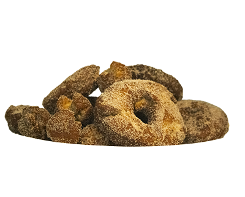

Recipe for Apple Cider Donuts
Ingredients
- 6 cups apple cider
- 1tsp. salt
- 1 cup granulated sugar
- ½ tsp. baking soda
- 4½ tsp. ground cinnamon, divided
- ½ tsp. ground nutmeg
- 3½ cups all-purpose flour
- 6 tbs. butter, melted and cooled
- 2 tsp. baking powder
- 3 cups vegetable oil
Directions
- Heat apple cider in a
small saucepan over high
heat. Bring to a boil; reduce
heat and simmer, stirring
occasionally, until reduced to
2 cups, about 15-20 minutes.
Let cool completely.
- In a small bowl, combine
sugar and 1 tbs. cinnamon;
set aside.
- In a large bowl,
combine flour, brown
sugar, baking powder, salt,
baking soda, nutmeg, and
the remaing cinnamon.
- In a large glass measuring
cup or another bowl,
whisk together butter, eggs,
and cider.
- Pour mixture over dry
ingredients and stir
using a rubber spatula until
mixture just comes together;
cover and place into the
refrigerator until chilled,
about 1 hour.
- working on a lightly
floured surface, roll dough
into ½-inch rounds; cut with
a 2½-inch cutter.
- Heat vegetable oil in a
large stockpot or Dutch
oven over medium heat until
a deep-fry thermometer
registers 375°F.
- Working in batches, add
donuts to the Dutch
oven and cook until evenly
golden and crispy, about 1
minute per side. Transfer to
a paper towel-lined plate for
30 seconds; then roll warm
donuts in the cinnamon sugar
mixture to coat. Serve warm.
For a differnt recipe click here.
